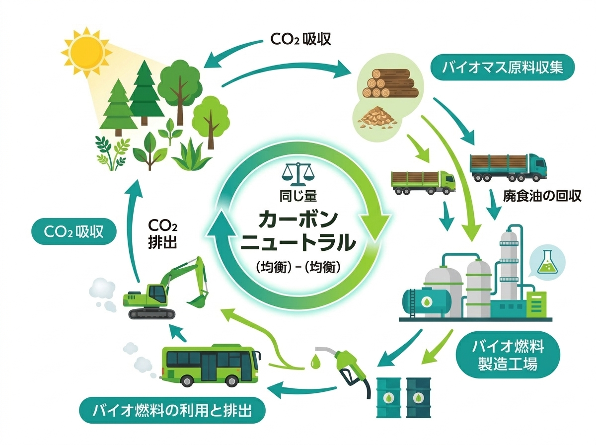

01 / Know HVO
HVO・サステオを知る
サステオがどのような燃料で、ほかのバイオ燃料や脱炭素手段と何が違うのか。原料の持続可能性をどう確認でき、国内外の制度や燃料品質規格のなかでどのように位置づけられるのかを整理しています。
サステオとは
この節で分かることサステオの特徴と、既存設備を活かす考え方
サステオは、ユーグレナが提供するバイオ燃料HVOのブランドです。既存のディーゼル車両や建設機械、発電機などを大きく変更することなく活用でき、燃料を切り替えることでGHG排出量の削減に貢献します。
主原料であるHVO（Hydrotreated Vegetable Oil）は、廃食油や植物油、動物性油脂などを原料に製造される再生可能燃料です。軽油に近い性状を持つため、現在お使いの設備との親和性が高いことが特長です。
バイオ燃料は、原料となる植物等が成長する過程で大気中のCO₂を吸収しています。燃焼時にはCO₂が排出されますが、バイオマス由来のCO₂は、吸収されたCO₂が再び大気中に戻るものと考えられるため、カーボンニュートラルとして扱われます。これにより、化石燃料からバイオ燃料へ切り替えることで、既存の車両や設備を活用しながらGHG排出量の削減に取り組むことができます。

なお、実際の削減効果は、原料や製造・輸送条件、採用する算定基準などに応じて算定します。
導入にあたっては、対象機器やメーカーの推奨内容、燃料仕様、供給・保管条件、関連法令などを確認しながら、最適な利用方法をご提案します。
| 製品 | 燃料構成 | 主な用途 |
|---|---|---|
| サステオ100 | HVOを100％使用する製品 | 公道を走行しない建設機械、構内専用機械、発電機など |
| サステオ51 | HVO51％と軽油49％を配合する混合燃料 | トラック、バス、公道を走行する建設車両など |
※ サステオの安全データシート（SDS）は別途ご案内します。
対象車両・設備、地域、使用量を整理して、利用可能性をご相談いただけます。
導入について相談するHVO・FAME・軽油の違い
この節で分かること燃料特性、既存設備との親和性、保管、CO₂削減の考え方の違い
同じバイオ燃料でも、HVOとFAMEは化学構造と取扱特性が異なります。
| 比較項目 | HVO（サステオ） | FAME | 軽油 |
|---|---|---|---|
| 燃料の種類・特徴 | 廃食油や植物油、動物性油脂などを水素化処理して製造する、パラフィン系炭化水素燃料。軽油に近い性状を持つ | 油脂とメタノールを反応させて製造する脂肪酸メチルエステル。HVOとは化学構造と取扱特性が異なる | 原油を精製して製造する化石由来の炭化水素燃料 |
| 既存設備との親和性 | 既存のディーゼル車両・設備を活用しながら導入を検討しやすい。使用可否や保証条件はメーカー、型式、燃料仕様ごとに確認が必要 | 設備適合性の観点から使用条件に制約があり、高濃度での利用には設備対応や運用管理が課題となる場合がある | 既存の標準燃料 |
| 低温・保管 | 酸化安定性や吸湿性の面で扱いやすい | 吸湿、酸化劣化、低温流動性、長期保管、ゴム・樹脂部品等への影響に注意 | JIS規格や季節・地域に応じた号数に応じる |
| CO₂削減の考え方 | 化石軽油から切り替えることで、バイオマス由来分に応じたCO₂削減が期待できる。削減効果は、HVOの混合率、原料、製造・輸送条件、算定基準等により異なる | 化石軽油の一部または全部を代替することでGHG削減が期待できる。削減効果は、混合率、原料、製造・輸送条件、算定基準等により異なる | 化石由来の燃料であり、使用に伴い大気中のCO₂の増加につながる |
← 横にスクロールできます
用途・設備・供給条件にあわせて、確認の順序を整理できます。
導入判断ガイドを見る電化・水素等との比較
この節で分かること導入期間、設備投資、適用領域、運用面での使い分け
脱炭素化の手段は一つではありません。
設備の更新時期、運用条件、供給インフラ、投資計画、削減目標に応じて、それぞれの選択肢の実現性を踏まえながら、最適な組み合わせを検討することが重要です。
サステオは、既存のディーゼル設備を活用しながら排出削減に取り組みたいお客様に向けた選択肢の一つです。
| 観点 | HVO（サステオ） | 電化 | 水素 |
|---|---|---|---|
| 導入時の対応 | 軽油からHVOへ燃料を切り替える | エンジン車・設備を電動車・電動設備へ置き換える | 燃料電池や水素エンジンを搭載した車両・設備へ置き換える |
| 導入までの期間 | 車両・設備の更新を待たずに、対象車両や拠点を限定して導入を検討しやすい | 車両・設備の更新時期と、充電・受電環境の整備計画に合わせて段階的に導入 | 対応車両・設備の調達と、水素供給インフラの整備状況に左右される |
| 主な適用領域 | 大型・長距離車両、建設機械、発電機、船舶など、短期間での電動化が難しい既存ディーゼル設備 | 乗用車や小型商用車など、走行距離、稼働時間、充電時間、積載量等の条件が整う車両や設備 | 長距離輸送、長時間稼働など、電化設備の重量や充電時間が制約となる領域で将来的な活用が期待される |
| 初期投資 | 既存設備を活用できる場合、車両・設備の更新投資を抑えやすい | 車両・設備の更新に加え、充電器、受電・配電設備等への投資が必要になる場合がある | 車両・設備に加え、水素の貯蔵・充填・供給設備への投資が必要となり、導入規模が大きくなる場合がある |
| 主な課題 | 燃料コストの負担、供給体制・給油ネットワークの拡充 | 充電インフラ整備、電力確保、車両・設備の更新 | 大規模な設備投資、水素供給インフラの整備 |
本比較は一般的な整理です。具体的な優位性は、用途、地域、稼働率などの条件によって変わります。
原料・持続可能性
この節で分かること原料の由来、食料との競合への配慮、持続可能性の確認方法
持続可能な原料を選び、その由来を確認できることが、バイオ燃料の環境価値を支えます。
HVOは、廃食油（UCO）や植物油、動物性油脂など、さまざまな油脂を原料として製造されます。なかでも、廃食油や動物性油脂などの廃棄物・残渣由来の原料を活用することは、資源の有効活用や、食料・飼料との競合を抑えることにつながります。
バイオ燃料のGHG削減効果は、原料の種類だけでなく、その調達経路、製造工程、輸送方法などによって異なります。そのため、原料の由来や持続可能性を確認し、サプライチェーンを通じて追跡できることが重要です。
ユーグレナは、2028年下半期の稼働開始を予定するマレーシアの商業規模バイオ燃料製造プラントへの参画を通じて、将来の供給体制の構築を進めています。同プラントでは、使用済み食用油、動物性油脂、植物油の加工過程で生じる残渣などの活用を予定しています。
Check points
バイオ燃料の持続可能性を確認する主なポイント
- 原料の種類と由来
- 食料・飼料との競合への配慮
- 原料調達から製造・輸送までのGHG排出
- サプライチェーンのトレーサビリティ
- 認証や証憑による持続可能性情報の確認
※ 現在販売しているサステオには、ミドリムシ由来の油脂は使用していません。ミドリムシ由来のバイオ燃料は、将来の商業化に向けて開発を進めています。
認証・トレーサビリティ・証憑
この節で分かること環境価値を何で確認できるか、お客様へ提供できる証憑
サステオは、品質だけでなく、原料の由来やサプライチェーンにおける持続可能性、GHG削減効果のトレーサビリティを確認できるバイオ燃料です。
導入効果を社内外へ説明するためには、燃料の使用記録だけでなく、その燃料がどのような原料から製造され、どのような経路で供給されたのかを示す証憑が重要です。
ユーグレナでは、ISCC認証に基づくサプライチェーン管理のもとで供給される燃料を取り扱っており、品質や持続可能性に関する情報を確認できる各種証憑をご提供しています。
ISCC認証とは
ISCC（International Sustainability and Carbon Certification）は、原料の調達から燃料の供給までのサプライチェーンにおいて、持続可能性とトレーサビリティを第三者機関が確認する国際認証制度です。原料の由来や流通経路を追跡できる仕組みにより、持続可能な原料の利用を担保します。
確認できる情報
- ISCC認証に基づくサプライチェーン管理
- 原料由来および持続可能性に関する情報
- Proof of Sustainability（PoS）などの関連証憑
「サステオが取得する認証」と「供給チェーン上で提示可能な証憑」は区別して整理しています。対象となる燃料のロットや数量と、証憑に記載された情報の対応関係をご確認ください。
品質・認証・証憑について、必要な提出先や報告目的にあわせてご相談いただけます。
品質・認証について相談する制度・品質規格から見るサステオ
この節で分かること改正省エネ法上の位置づけ、国内の軽油規格、欧州 EN 15940 との関係
改正省エネ法と非化石エネルギー自動車
2023年4月に施行された改正省エネ法では、従来の省エネルギーに加え、事業者による非化石エネルギーへの転換が求められるようになりました。一定規模以上の特定荷主や特定輸送事業者には、非化石エネルギーへの転換に関する中長期計画の作成や、取組状況の定期報告が求められます。
改正省エネ法では、EV、PHEV、水素燃料自動車などに加え、バイオ燃料や合成燃料を使用する自動車も「非化石エネルギー自動車」として位置づけられています。
特定荷主については、荷主専属用輸送および自家輸送に使用する貨物トラックを対象として、2030年度における非化石エネルギー自動車の使用割合を5％とする目安が示されています。
特定荷主または特定輸送事業者が、HVOを51％混合した「サステオ51」を専用で車両に使用する場合、改正省エネ法に基づく中長期計画書において、当該車両を「非化石エネルギー自動車」として報告することが可能です。
関連情報
- 資源エネルギー庁「省エネ法の手引き 荷主編」
- 資源エネルギー庁「省エネ・非化石転換法の概要」
- 国土交通省「省エネ法（輸送）」
- ユーグレナ「HVO51％混合の次世代バイオディーゼル燃料『サステオ』を開発」
国内の燃料品質規格とHVO・FAMEの違い
日本では、自動車用軽油について、JIS K 2204による標準規格と、品確法による強制規格が設けられています。
HVOは、バイオマス原料を水素化処理して製造する燃料です。FAMEとは製造方法や化学構造が異なり、軽油と混合して使用するほか、一定の条件のもとで単独でも使用できるドロップイン燃料です。
一方、FAMEは、油脂をエステル交換して製造する脂肪酸メチルエステルです。品確法では、軽油に含まれるFAMEは原則0.1質量％以下とされ、追加の品質項目を満たす場合でも5質量％以下とされています。
HVO100％は、地方税法が定める軽油の密度下限値を下回るため、そのまま公道走行用の軽油として流通させることには制約があります。サステオ51は、HVOを51％、軽油を49％混合し、燃料の密度を調整することで国内の軽油規格に適合させた燃料です。軽油と同様に、ディーゼル車両の公道走行に使用できます。
関連情報
- 資源エネルギー庁「石油製品の品質確保について」
- 日本規格協会「JIS K 2204 軽油」
- ユーグレナ「HVO51％混合の次世代バイオディーゼル燃料『サステオ』を開発」
欧州のパラフィン系ディーゼル燃料規格「EN 15940」
欧州では、HVOなどのパラフィン系ディーゼル燃料について、品質要求事項と試験方法を定めた「EN 15940」が整備されています。EN 15940では、セタン価、密度、動粘度、硫黄分、酸化安定性、低温性能などが規定されています。
サステオに使用しているHVOは、EN 15940に適合しています。サステオ51は、このEN 15940適合HVOを51％配合し、日本国内の軽油規格に適合させた燃料です。
関連情報
- 日本規格協会「BS EN 15940:2023」
- ユーグレナ「HVO51％混合の次世代バイオディーゼル燃料『サステオ』を開発」
法令の解釈および適用は、用途、地域、製品によって異なります。実際の取扱いについては、所管官庁、都道府県、専門家への確認をお願いします。
用途、地域、製品を明示いただくと、法令・税務上の確認事項を整理してご案内できます。
法令・税務について相談する